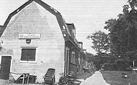
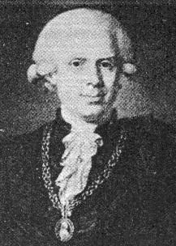
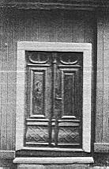
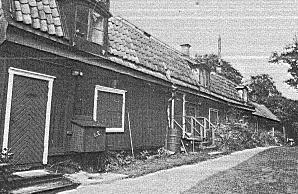
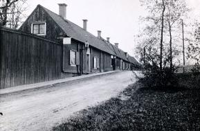
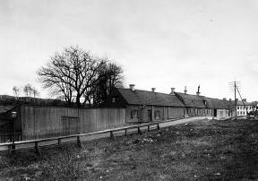
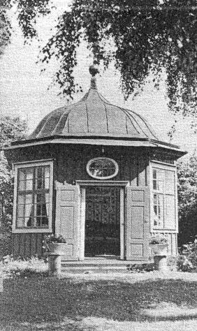

|
|
Ekermanska malmgården
Den Ekermanska
malmgården ser i dag inte mycket ut för världen. Mangårdsbyggnaden finns kvar; två sammanbyggda
trähus på stenfot och med tegeltak samt en vacker gustaviansk dubbelport är vad som återstår. En
gång har den dock varit en borgmästares stolta boning, även om denne endast bodde där på sommaren.
Detta har man svårt att tro, när man ser den nu, inklämd mellan järnvägen och Tantolunden.
|
|

|
Handelsmannen och bryggareåldermannen Johan Falck efterlämnade vid sin död år 1742 stora
egendomar. En sjättedel av dessa gick till magistratssekreteraren Samuel Ekerman, som i sitt
andra gifte var förenad med en av Falcks döttrar. Ägorna som han ärvde låg vid Fatburssjön och
Dantogatan. Ekerman hade även egen klädesfabrik. Den här tiden var det inte alls ovanligt med
en kombination av offentlig tjänst och egen verksamhet.
|

|
|
Sonen Carl Fredrik ärvde alltså betydande summor och egendomar efter sin far, som
hade haft förmåga att liksom sin svärfar föröka sina pengar. Carl Fredrik Ekerman blev den
mest kände av gårdens alla innehavare. Han var justitieborgmästare, medlem av kyrkorådet i
Maria församling och talman vid borgarståndets riksdagar 1778, 1779 och 1786. Han blev
också av Gustav III, vars ynnest han hade, utnämnd till fadder åt kronprinsen, den blivande
Gustav IV Adolf.
Denne ryktbare kommunalman var också Stockholmsforskare och samlare. På vinden till hans
malmgård fann man 1908 en del av hans efterlämnade papper om Stockholm. För inköpet - av
dessa fick Stockholms stad betala 900 kronor till säljaren, en fd handlande C F Högberg, som för
övrigt bodde på gården. Där hade han drivit livsmedelsaffär, vilken han upphört med då Tanto
sockerbruk år 1900 startade sin kooperativa butik.
Genom arv och genom köp började Carl Fredrik att samla Johan Falcks splittrade ägor, men detta
kostade honom så mycket att han var tvungen att sätta sig i skuld.
G F Diedrichsson, ägaren till
Christinehofs malmgård, var den som hjälpte honom med de största lånen, något som kom att få
konsekvenser vid Carl Fredriks död 1792. År 1770 ägde han två tomtområden, det ena på 43 883
kvadratalnar och det andra på 68 703 kvadratalnar (ca 15 360 resp ca 24 040 m2). Eftersom han redan
då hade börjat att uppodla tomten vid Tantogatan (namnet Danto hade förändrats till Tanto) -
nuvarande Sköldgatan 9-11 - vände han sig till magistraten för att få friköpa egendomarna. Han kunde vältaligt utveckla sina skäl för att försäkra sig om ett bifall:
|
"Ock som jag ingalunda tvivlar, att ju Högvälborne Greven och Överståthållaren samt den Högädle
Magistraten med nöje anser, det tomterne i staden, ehuru avlägsne de måge vara, hellre förvandlas
till fruktbärande plantager, indelte i avsättningar, samt vackre trädgårdar försedde med byggnad,
än förblifva ohöfsade stenrösen och obrutne stenbackar, bebyggde med några snart förmultnade
trästuvor, hellre omgivne med stengårdar, häckar eller plank efter varje ställes belägenhet än
görselstör och staket---."
Friköpet beviljades. Staden ansåg sig inte ha intresse av några så "avlägsne, bergaktige och
sterile" områden. Kan denna formulering av hans önskan att friköpa egendomarna ha något att
göra med det som fanns före hans tid? Av olika mantalslängder från år 1711 och framåt framgår
att där fanns flera små gårdar med olika innevånare, bl a trädgårdsmästare, en sillpackaränka och
en dragon. Det var fattigt och dåligt. År 1730 kallades huset "Gröna gräset".
År 1760 bodde här en inspektör vid Skanstull och tobaksodlingar hade påbörjats.
|
Men tillbaka till Carl Fredrik Ekerman. Vid dennes död hade alltså egendomen vuxit i omfång
och skulderna stigit, men på ett eller annat sätt räddades egendomen och gick vidare inom släkten.
Återigen tog en son över, denna gång rådmannen Adolf Ludvig Ekerman. Under hans tid - år 1813
- gjordes en utförlig värdering av malmgården och ägorna. Dessa var nu 578 166 kvadratalnar (ca
202 360 m2).
Trädgården var avstängd från manbyggnaden med ett staket på stenmursfot. Den var verkligen stor.
Där fanns 100 fruktträd och 200 bärbuskar, där fanns drivhus och drivbänkar. Inom detta område låg
också tobaksodlingar och en tobakslada. Tobaksodlingarna var annars huvudsakligast placerade på
andra delar av egendomen och givetvis också tobaksladorna.
Ekermanska släkten tycks som många andra ha bedrivit
tobaksodling i stor skala. Inte mindre än 27 tunnland användes för detta ändamål. Inom
trädgårdsområdet, som till stor del låg där Södersjukhuset och järnvägen nu ligger, fanns också
flera ekonomibyggnader: två stall för tillsammans tio hästar, ett uthus, ett fähus för sex kor och två
svinstior. Även sedvanligt jordbruk hörde givetvis till gården.
|
|

|
Adolf Ludvig Ekerman lämnade gården vidare till sin bror, grosshandlaren Carl Johan Ekerman.
Adolf Ludvig dog nämligen barnlös 1829. Efter Carl Johan såldes gården till Johan Gartz och Anna Ekerman, en syster till Carl Johan, som var förmyndare till parets tre barn, då båda föräldrarna dog 1813. Kapten Bengt Gartz, en systerson till Carl Johan således, köpte gården 1856. Denna blev då krog. Förfallets tid hade börjat. Stenstaden växer, trädgårdar och tobaksland försvinner.
Den 1 januari 1897 tillträder Stockholms stad egendomen, som säljs av fröknarna Hilda och Ebba
Gartz för 195 000 kronor, efter det att staden hade prutat 5 000 kronor. Det ursprungliga priset ansågs
nämligen för högt. Staden skulle efter detta datum få uppbära all avkastning, troligen hyror. I
sin tur lovar staden att "enkan Charlotta Boberg, berättigas att, så länge hon lefver, hyresfritt
qvarbo i en av henne nu disponerad lägenhet om ett rum med tillhörande uthus".
|

|
|
När järnvägen byggdes på gårdens mark i början på seklet blev återigen en del av huset
servering, denna gång för arbetarna. Innan dess hade mangårdsbyggnaden delats upp i mindre
lägenheter och fattiga arbetare hade flyttat in. De hade minsann inga moderniteter, endast en
vattenkran utomhus som fanns kvar in på 1950-talet, då en vattenledning installerades. Stockholms
stad ansåg att gården nu var halvmodern och ökade följaktligen hyran. Den användes sedan för
bostadsändamål fram till 1975, då den utdömdes.
Åren 1917-1925 fanns också en livsmedelaffär och en tobaks-och snusaffär i huset.
Livsmedelsbutiken drevs av en fru Anna Karlson. Kunderna kom till stor del från Sockerbolaget
vid Tanto.
|
Förfallet ökade till den dag 1972 då någon tände på huset och delar av taket förstördes.
Så stod det täckt av en presenning utan att någonting gjordes på ett år. Några Högalidsbor
började då agera och Stockholms stad skyndade sig att göra nödvändiga reparationer. Ur den
arbetsgruppen växte sedan Högalids hembygdsförening fram. Starten skedde 1973. Delar av
gården används nu som föreningslokal och visas även för intresserade varje söndag.
|
Hembygdsföreningen har gjort ännu en insats för gården och ett illa åtgånget Söder-lusthus.
Vid Lilla Skinnarviksgränd 4, inklämt bakom ett plank, stod sedan 1964 det Malmqvistska
lusthuset från Torkel Knutssonsgatan 22. Då lades den gården i malpåse och lusthuset flyttades.
Den Malmqvistska gården anlades i början av 1700-talet av kunglig sekter Gustav von Soldan.
Klockaren Jonas Petter Malmqvist köpte den 1852 och öppnade där tillsammans med sin hustru
Johanna en barnuppfostringsanstalt i kristlig anda. Lusthuset till den gården finns nu vid borgmästare
Ekermans gamla malmgård och är genom hembygdsföreningens försorg upprustat och fint. Med sitt
kupolformade tak och vindflöjeln med årtalet 1761 pryder det trädgården. Jag är övertygad om att
Carl Fredrik Ekerman också hade ett lusthus någonstans i sin trädgård och nog skulle bli glad i sin
himmel att se det Malmqvistska lusthuset.
Själva mangårdsbyggnaden var ganska stor. Ända till renoveringen 1984 trodde man att den
bestod av två sammanbyggda trähus på stenfot, innehållande i bottenvåningen åtta rum och kök
och i övervåningen fyra rum. I inredningen av huset talas även om gipsade tak och
porslinskakelugnar.
Vid den pågående restaureringen har man kommit fram till att det ursprungligen var fyra,
kanske fem små hus. Den äldsta delen som nu inrymmer Högalids hembygdsförenings kök är
från 1600-talet och är troligen en av de två stugor som Carl Fredrik Ekerman köpte på auktion år
1770 av tullinspektor Jakob Hagman. Så byggdes husen ihop och uthus och vagnslider m m
tillkom. Inkörsporten byggdes också in i huset och där har nu hembygdsföreningen sitt lilla rum.
Gatan höjdes också vid något tillfälle och som huset var byggt med timmerstockarna vilande
direkt på marken kom golven att ligga under gatunivån
|

Sköldgatan 9-11 från öster 1920
|
|

1909
|
|
|

.
Arne Munthe säger i Västra Södermalm (1956) att gården är "en bortglömd relikt, berövad hela sin
ursprungliga miljö". Fortfarande kan vi dock besöka den och kanske fortsätta att beundra den efter
restaureringen trots att den är byggd "för länge tid tillbaka".
|
|
|